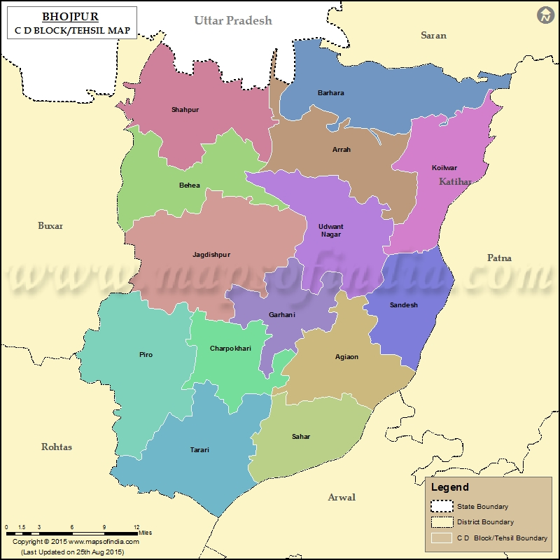
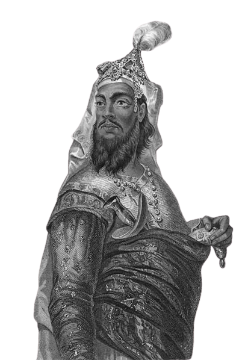

|   |
The present district of Bhojpur came into existence in 1972. Earlier this district was the part of old Shahabad district. In the year 1972 Shahabad district was bifurcated in two parts namely Bhojpur and Rohtas. Buxar was a sub-division of old Bhojpur district. In 1992 Buxar became a separate district and rest of Bhojpur district has now three sub-divisions-Ara Sadar, Jagdishpur and Piro. Ara town is the headquarters of the district and also its principal town. The district is bounded on the north by the district of Saran ( Bihar ) and Balia district of Uttar Pradesh; on the south by the district of Rohtas; on the West by the district of Buxar and on the East by the district of Patna, Jahanabad and Arwal. Bhojpur district has a close linkage with that of its parent district of Shahabad, which had an old and interesting history. In the pre-historic days also there is evidence of the area being inhabited. The 1961 Census report of Shahabad describes the history of the district in following manner. It is said that Ara, the present headquarters of the district derives its name from the Sanskrit word ‘ARANYA’, which means forest. It suggests that the entire area around modern Ara was heavily forested in old days. According to mythology, sage Vishwamitra, the Guru of RAMA , had his ‘Ashram’ somewhere in this region. The 1961 Census report also describes the early period of the old Shahabad district which includes the present district of Bhojpur as “In the old days, Shahabad formed part of the ancient kingdom of Magadh which also contained portions of the present Patna & Gaya district. Though included in the kingdom of Emperor ASHOKA , the general absence of Buddhists’ monuments from a greater part of the district suggests that it remained almost immune from the Buddhist influence of the time” “The famous Chinese pilgrim, HIEUN-TSANG, who journeyed through the country in the seventh century A.D., paid a visit to Mo-Ho-Solo in Shahabad. This place has been identified with the present village Masarh, 10 k.m. west of Ara on Ara-Buxar road. The Chinese pilgrim found that the inhabitants were all Brahmins who did not respect the law of Buddha. He, therefore, felt disappointed and did not proceed to any other place in the district.” “Not much is known about the history of the district after the fall of Guptas. In all probability it relapsed into the hands of the aboriginal tribes and came under control of petty chieftains. The most dominant people during this period were Cheros. They ruled over the greater portion of the district. Then came the Rajputs from Ujjain in the province of Malwa . Raja Bhoj was their king and the term ‘Bhojpur’ now applicable to the area is derived from him.” The Medieval period history of this district has been described in the following words “While encamping at Ara in 1529 after his victory over the Afghan rulers, Babar proclaimed his sovereignty over Bihar . In commemoration of this event, the place was called Shahabad, which literally means ‘the city of Emperor ‘. This name was later applied to the Sarkar within which Ara was included and eventually toe entire district.” Akbar, after his accession, includes the district of Shahabad in his empire, though the control was not very tight. Akbar’s General Man Singh, made efforts to organize the revenue administration of the district on a sound footing. But the local chiefs continued to resist. The Rajas of Jagdishpur and Bhojpur defied the Mughals. The Raja of Bhojpur rebelled against Jahangir. His successor Raja Pratap, was done to death by Shahjahan and the Queen was forced to many a Muslim courtier. This finally quiet end the Bhojpur family but stray troubles continued till the last days of Mughals. After this the District had a very uneventful history till 1857 when Kunwar Singh revolted against the Britishers in line with the Mutineers. |